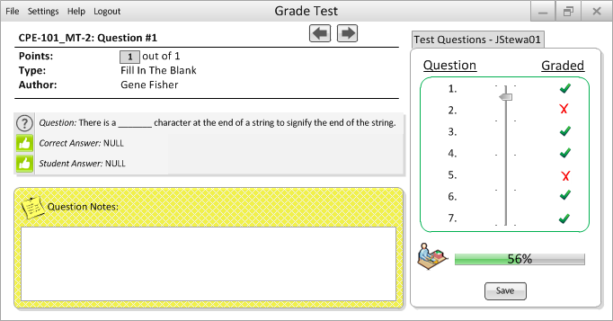
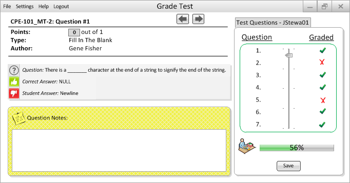

This is the professor's home screen when trying to grade a Fill-in-the-Blank question.
- Auto Grading: The program will compare the student's submitted answer to the one listed in the Answer field by the author of the question, in Figure 2.2.2.4.2, to generate a score.
- Manual Grading: After evaulating the question and the student's answer, the professor can leave a note for the student and edit the point-value field by clicking on the grey box in order to input a score.

